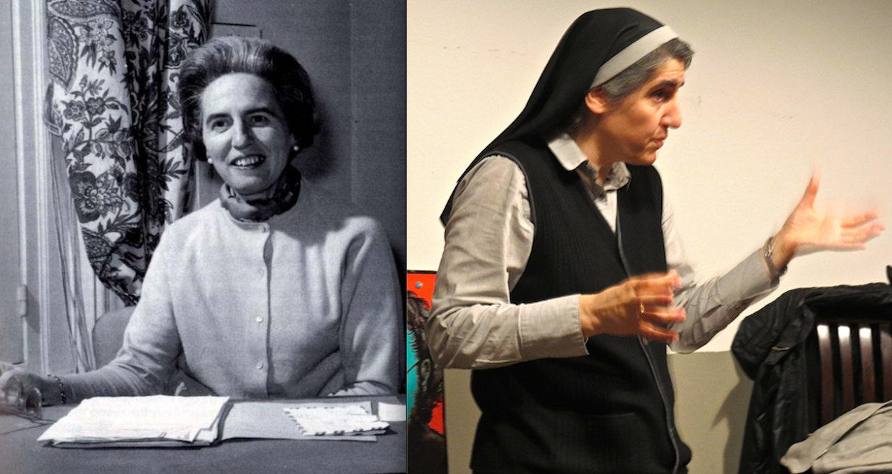

Voices in the Fight for Inclusion

Left Photo: Pilar Bellosillo, Manos Unidas
Right Photo: Sr. Teresa Forcades, National Catholic Reporter
With the rise of feminist movements in late twentieth-century Spain, the Catholic Church's hierarchy of gender norms was being challenged and met with resistance. Catholic feminists in Spain have made many contributions for the feminist movement, from their involvement in feminist theology, creation of religious material made for women, and maintaining of empowering spaces that foster dialogue amongst women in the Catholic Church.
Feminist Theology Movements
The Asociación de Teólogas Españolas (ATE) (founded in 1992) is an organization that promoted feminist theology in Spain. Its members developed theology focused on women’s experiences in history and religion as a counter to male centered doctrines. Biblical figures like Mary Magdalene were reinterpreted from a woman-centered perspective, changing her narrative to a disciple that witnessed Jesus’ resurrection instead of a sinner.
Ohter Catholic feminist organizations such as Mujeres y Teología and the Forum of Studies on Women promoted equality within Catholic practices through grassroots (bottom up) initiatives
“[Mary Magdalene] had almost become the epitome of the female sinner (prostitute) […] It became urgent to read the Gospel with new eyes to recover the Magdalene’s image of a disciple of Jesus from the beginning, the first witness of His resurrection and … the voice for the voiceless” (Valiente).
Women-Centered Materials
Written by feminist theologians for Catholic women, the Asociación de Teólogas Españolas created prayer books that centered women’s personal experiences in religious reflection with themes like relationships, caregiving roles, and autonomy.
"For instance, their authors reflected on the personal relationships that they had forged as daughters, female friends, female co-workers, wives or mothers” (Valiente).
The Forum of Studies on Women also created study booklets to support small groups of women in studying the Bible and Church teachings while addressing gender inequality within Catholicism. In addition, it promoted ecumenism and interfaith dialogue in an intersectional way that made the feminist movement impactful.
"In these groups, women work together to obtain a deeper knowledge of the Bible or the Catholic doctrine, reflect on how they live their religiosity or pray” (Valiente).
Challenges from the Catholic Hierarchy
The Catholic hierarchy specifically in Spain has been persistently hostile toward feminist movements. Bishops have outright ignored demands for change, barred the feminist groups from Church activities, and removed feminists from Church spaces. This uncompromising stance has made policy changes seemingly impossible, with little to no chance for increased leadership roles for women in the Church.
“The Church hierarchy in Spain has always displayed a contemptuous approach towards feminism, which has consisted of ignoring all feminist claims, including those made by Catholic feminist groups” (Valiente).
Catholic Feminist Activists
Pilar Bellosillo was a Catholic feminist figure in Spain who founded the Forum of Studies on Women, through which she addressed the inequality of women within the Catholic Church. This organization created inclusive spaces for women in religious practices. Bellosillo also was the President of the World Union of Catholic Women’s Organizations, where she advocated for Catholic women globally for their inclusion in Church decision-making processes. During Vatican II, she was one of the few female auditors (women allowed to attend the Council’s sessions without voting rights). She pushed boundaries of what was traditionally accepted for women under Church authority.
Teresa Forcades is a Catalan Benedictine nun, theologian, and doctor who became a key figure in Catholic feminism. She has critiqued the Church’s patriarchal structures and teachings, especially those in relation to women’s roles in the Church and sexual ethics. Forcades has advocated for greater inclusion of women within Church leadership even as far as the ordination of women. As a supporter of Catalan nationalism and social justice, her work shows a broader intersection of liberation theology and feminist theology.